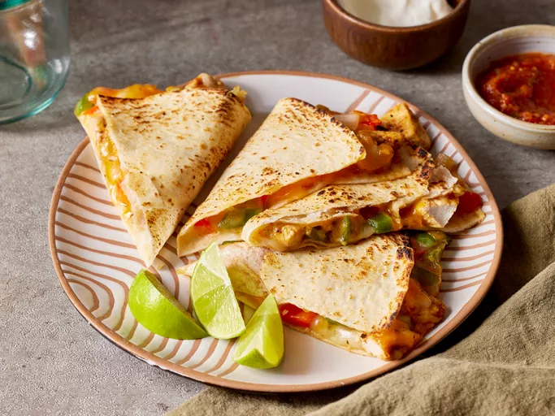

Chicken Quesdillas

Description
For a little taste of Mexico, this recipe is as good as it gets when it comes to easy but delicious chicken quesadillas!
Ingredients
- 1 lb Chicken Breast
- Fajita Seasoning Packet
- 10 Flour Tortillas
- 1 Package Shredded Mexican Cheese
- Bell Peppers (Diced)
- Cooking Spray
Steps
- Dice chicken breast into small cubes
- Spray pan with cooking spray and turn stove to medium heat
- Add chicken and packet contents into pan, let cook until chicken is cooked fully through
- Add in peppers, salt and pepper
- When peppers are cooked to prefrence, remove everything from the pan
- Place a tortilla in the pan and add base layer of shredded cheese
- Add back a portion of the chicken and pepper mixture, top with cheese and cover with a second tortillas
- Let cook for about 5 minutes and check bottom tortilla often to prevent burning
- When the bottom tortilla is a golden brown, flip the whole quesadilla and repeat process until both sides are golden brown.
- Remove quesadilla from pan and cut into triangle slices using a pizza cutter or regular knife
- Enjoy!
Home